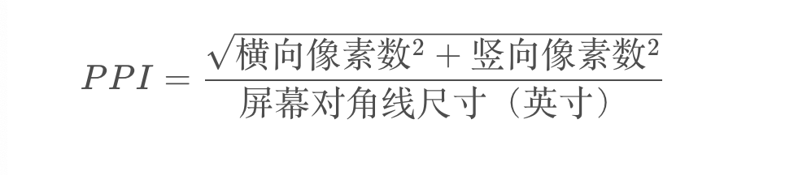

设备屏幕，有一些容易被我们忽略的知识点，特别是在做响应式的时候，我们老是会对一些基础的设备概念产生一些疑问，例如：
- px、pt有啥区别呀？
- 移动端到底能不能用px？
我们先了解以下的一些概念。
1. 物理像素 — Device Pixels
显示屏的成像原理：通过一系列的小点排列成一个大的矩形，不同的小点通过显示不同的颜色来显示成图像。
单位pt，属于真正的绝对单位，代表一个像素点。
2. 逻辑像素 - Logical Pixel
逻辑像素也可以称为设备独立像素 DIP(Device independent Pixel)
CSS像素单位是px（CSS pixel），浏览器里的一切长度都是以 px（CSS像素）为单位。
一般情况下来说， CSS像素 = 独立像素 = 逻辑像素
3. 设备像素比 — Device Pixel Ratio
设备像素比(DPR)是默认缩放为100%的情况下，物理像素和逻辑像素的比值
DPR = 物理像素 / 逻辑像素(某一方向上)
在移动端浏览器中以及某些桌面浏览器中，window对象有一个devicePixelRatio属性，它就是DPR。
1 | > window.devicePixelRatio |
例如 IPhoneX 的 devicePixelRatio = 3，如下图。
而前几代 iphone 6/7/8 采用的同样的屏幕，devicePixelRatio = 2
所以 IPhoneX 的屏幕比 IPhone7 更高清。
4. 像素密度 - Pixels Per Inch
每英寸像素取值，更确切的说法应该是像素密度，也就是衡量单位物理面积内拥有像素值的情况。

高PPI的设备中，一个CSS像素通常等于两个甚至三个物理像素。
PPI通常是判断设备屏幕清晰度的重要参数，所以我们买设备的时候可以重点关注这个参数哟（设备分辨率高可不一定代表高清哟～）